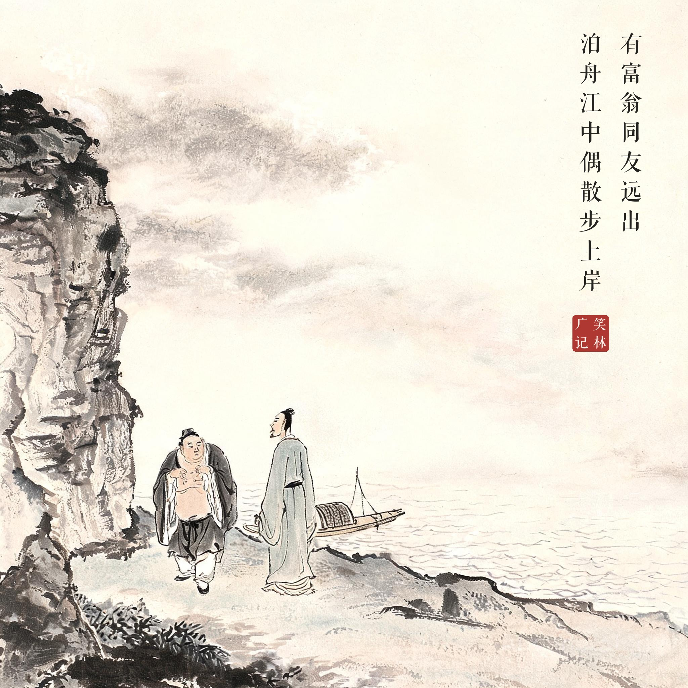
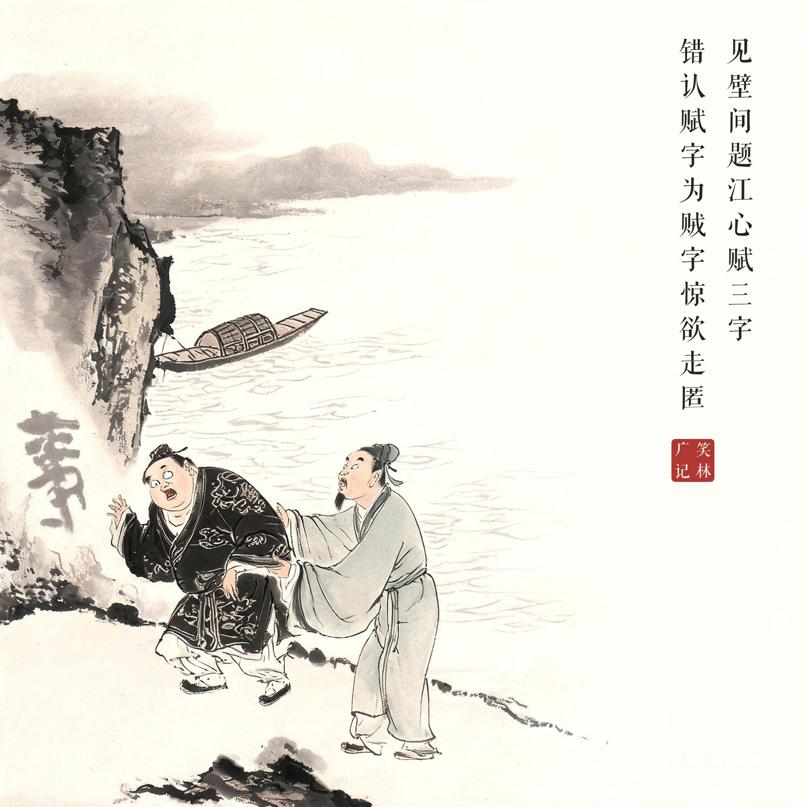
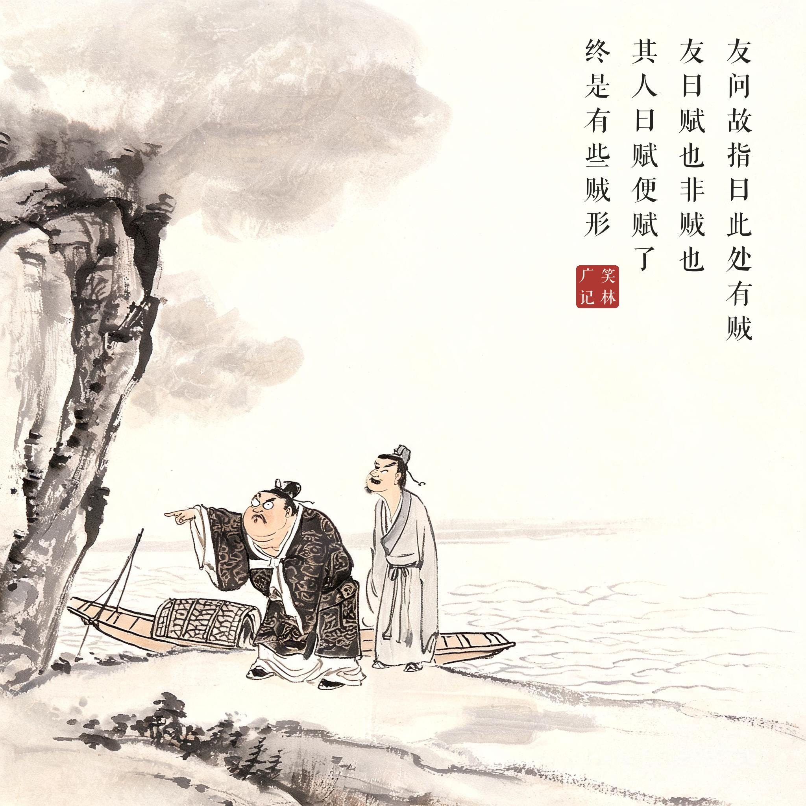

《笑林广记 · 古艳部》（[清]游戏主人纂集）
有富翁同友远出，泊舟江中。偶散步上岸，见壁间题"江心赋"三字，错认"赋"字为"贼"字，惊欲走匿。友问故，指曰："此处有贼。"友曰："赋也，非贼也。"其人曰："赋（富）便赋了，终是有些贼形。"
一位富翁和朋友出远门，把船停在江心。上岸散步时，看见石壁上题着"江心赋"三个字，他把"赋"错认成了"贼"，吓得转身就想躲。朋友问缘故，他指着石壁说："这儿有贼！"朋友说："那是'赋'，不是'贼'。"富翁嘴硬："'赋'（富）就'赋'（富）吧——终究是有些贼相！"
富户捂脸三连：见字大惊、被友纠正、嘴硬到底——"赋便赋了，终是有些贼形"，一语双关，把为富不仁者的贼相钉在江边石壁上。